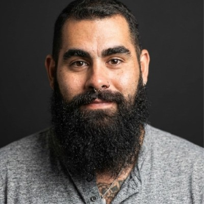
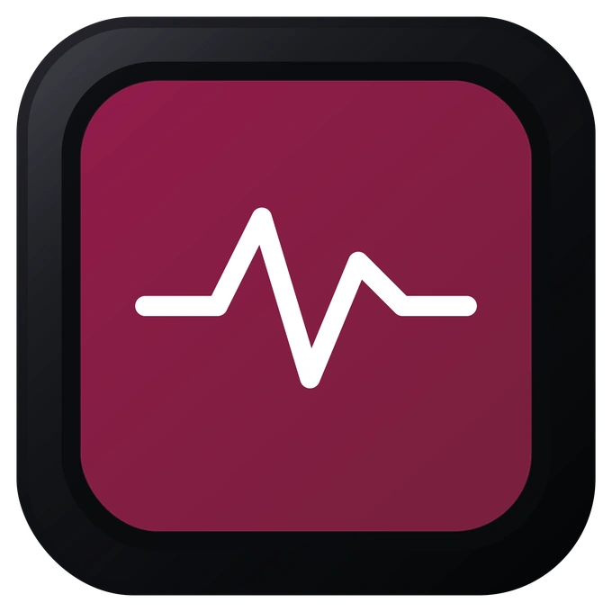
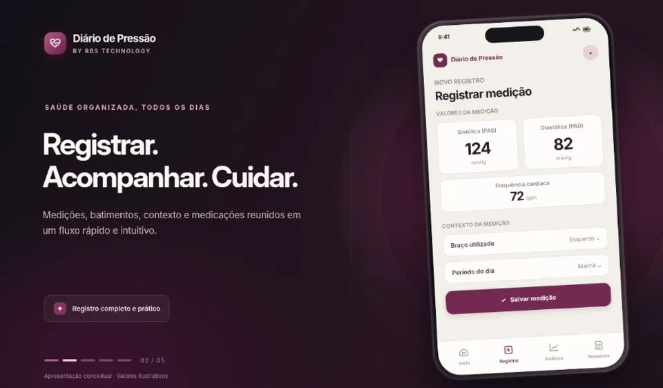
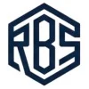
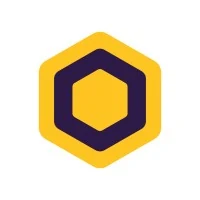
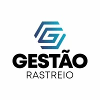
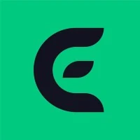
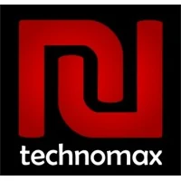

01
Gestão e projetos
Planejamento, métodos e acompanhamento de projetos e equipes.
- Jira
- ClickUp
- Microsoft Project
- Monday.com
- Asana
- Trello
Scrum · PMBOK · ITIL · BPMN
PORTFÓLIO PROFISSIONAL
Gestão de Projetos · Tecnologia · Consultoria e Treinamentos
Atuo com projetos, sistemas e pessoas desde 2010, reunindo experiência técnica e gestão para acompanhar soluções da concepção à operação.
Aqui estão alguns dos projetos que desenvolvi, apresentações que conduzi e experiências que construí ao longo da carreira.

Minha história com a tecnologia começou em 2010, trabalhando com desenvolvimento de software e estudando Sistemas de Informação, desbravando o universo do front-end e back-end. Com o passar do tempo, tive a oportunidade de conhecer e atuar em diferentes áreas da TI, como infraestrutura, suporte técnico, qualidade de software, gestão de projetos, implantação de sistemas e consultoria.
No decorrer dos anos, assumi novas responsabilidades, envolvendo arquitetura de soluções, gestão de produtos, coordenação de equipes e direção de projetos. Hoje, estou à frente de projetos da RBS Technology.
Com a experiência, aprendi que um projeto não termina simplesmente quando o sistema é entregue ou quando o usuário assina o aceite.
O sistema precisa fazer sentido para quem vai utilizá-lo.
Por isso, gosto de entender o dia a dia das pessoas, organizar o que precisa ser feito e acompanhar a solução até que ela realmente atenda às necessidades da operação. Treinar equipes também faz parte desse caminho.
Acredito que ter passado por diferentes etapas da operação me ajudou bastante na maneira como trabalho hoje. Já estive na posição de quem precisa resolver um chamado, entender um problema técnico, implantar um sistema e orientar pessoas que estão aprendendo a utilizá-lo. Também tive a oportunidade de formar profissionais para atuar em suporte, treinamentos, administração técnica e consultoria, algo que considero especialmente gratificante.
Procuro levar essa experiência para os projetos que conduzo, buscando compreender as necessidades de cada operação, manter uma comunicação clara com as equipes e acompanhar de perto o andamento das entregas.
Também gosto muito da parte de capacitação. Durante minha trajetória, realizei treinamentos, participei de workshops e, em 2023, tive a oportunidade de publicar um curso EAD sobre ERP. Compartilhar conhecimento e ajudar outras pessoas a compreenderem melhor as ferramentas que utilizam é uma atividade que valorizo bastante.
Conhecer meu perfil no LinkedInFerramentas, plataformas e métodos presentes na minha trajetória profissional, organizados por área de aplicação.
Planejamento, métodos e acompanhamento de projetos e equipes.
Scrum · PMBOK · ITIL · BPMN
Administração, implantação, parametrização e suporte a sistemas empresariais.
Modelagem, dados, integração de sistemas e documentação técnica.
Especificações, manuais, acompanhamento de trabalho e colaboração.
Nove soluções com propostas distintas. Conheça os aplicativos, explore suas demonstrações e consulte as tecnologias e decisões de implementação identificadas em cada projeto.

SAÚDE E ACOMPANHAMENTOAplicativo para acompanhar a pressão arterial e organizar informações importantes da rotina de saúde em um só lugar. Permite registrar medições de pressão e batimentos, acompanhar peso e medicamentos e consultar o histórico por diferentes períodos. Gráficos, médias e indicadores facilitam a identificação de variações ao longo do tempo, ajudando o usuário a levar registros mais claros às consultas. É uma ferramenta de acompanhamento pessoal, não de diagnóstico médico.
▶ Assistir demonstração
Selecione uma solução na lista. Clique no destaque para assistir ao vídeo. A ficha técnica abre somente quando solicitada.
Quatro apresentações sobre módulos de sistemas de gestão. Os vídeos permitem conhecer minha forma de explicar ferramentas e orientar usuários.
Visão de rotinas financeiras em um sistema de gestão.
Estrutura e organização de cadastros de produtos.
Apresentação da área cadastral de pessoas.
Apresentação de funcionalidades relacionadas a estoque.
Os arquivos são reproduzidos pelo Google Drive. Se a reprodução não abrir nesta página, utilize o botão para assistir diretamente no Drive.
Conheça os cargos, responsabilidades e projetos que marcaram minha trajetória. Abra cada experiência para consultar as atividades.
Selecione “Ver atividades” para conhecer mais sobre cada experiência.

Diretor de Projetos
Atualmente, atuo na direção de projetos da RBS Technology, dando continuidade à minha trajetória em gestão de tecnologia, desenvolvimento de soluções e produtos digitais.

Analista de Sistemas Sênior
Atuei na administração de sistemas corporativos utilizados pelas seis empresas do Grupo Hive, envolvendo plataformas de gestão empresarial, recursos humanos, faturamento e atendimento.
Uma das principais responsabilidades foi a atuação no produto BeeBilling, acumulando atividades de Product Owner, Scrum Master e Tech Lead. Nesse contexto, trabalhei diretamente com a equipe de desenvolvimento, organizando backlogs, sprints e roadmaps, além de acompanhar entregas, levantar requisitos e alinhar necessidades com as áreas de negócio.
Também participei de processos de faturamento, importações de dados, integrações, documentação técnica e capacitação de usuários.

Gerente de Projetos e Tech Lead
Fui responsável pela coordenação de três frentes de trabalho: Suporte, Implantação e Desenvolvimento, envolvendo equipes de diferentes especialidades.
O trabalho envolveu estruturar processos, organizar as demandas das equipes e estabelecer práticas de gestão adequadas à realidade de cada área.
Entre as atividades desenvolvidas, estiveram a implantação e administração de ferramentas como Freshdesk, ClickUp e Jira, organização dos atendimentos e indicadores de SLA, planejamento de implantações e acompanhamento das entregas de desenvolvimento.
Também atuei na gestão de produtos ERP, mobile e soluções financeiras, participando da organização de sprints, backlogs e roadmaps.

Consultoria, Implantação e Arquitetura de Soluções
A Eloca teve um papel importante na minha trajetória profissional. Comecei trabalhando com suporte técnico especializado em ERP e, ao longo de pouco mais de três anos, tive a oportunidade de atuar em implantação de sistemas, consultoria, arquitetura de soluções e projetos especializados.
Durante esse período, participei de projetos de entrada em produção (GoLive), trabalhando com planejamento, levantamento de requisitos, configuração de sistemas, treinamento de usuários e acompanhamento das operações.
Posteriormente, passei a atuar na arquitetura de soluções, coordenando projetos de diferentes complexidades, desde consultorias pontuais até grandes reimplantações.
Em 2023, desenvolvi e publiquei um curso EAD sobre os módulos de um ERP voltado ao segmento de locação de equipamentos para construção civil.
Também participei da implantação piloto de uma solução de ponto de locação e frente de caixa, conduzindo posteriormente workshops para apoiar sua expansão em uma rede de franquias.
Na etapa final dessa experiência, integrei o projeto Kindness Channel, voltado a consultorias e projetos de média e alta complexidade. Também atuei na capacitação de novos implantadores e na formação de consultores.
Gerente de TI e Projetos
Atuei na gestão de TI e projetos, coordenando uma equipe de sete profissionais, entre colaboradores internos e terceirizados.
Além da administração da infraestrutura tecnológica, servidores, usuários e sistemas, fui responsável pela gestão do ERP utilizado pela empresa, apoiando parametrizações, documentação e treinamento de usuários.
Também desenvolvi trabalhos de mapeamento e melhoria de processos internos, utilizando ferramentas como Bizagi, além de acompanhar projetos e apresentar resultados às lideranças.

Análise de Sistemas, Qualidade e Suporte Técnico
Na Technomax, consolidei boa parte da minha experiência com sistemas de gestão empresarial, suporte técnico e relacionamento com usuários.
Atuei no atendimento técnico em diferentes níveis, análise de problemas em ERP, documentação de procedimentos, treinamento de profissionais e apoio aos clientes.
Também tive a oportunidade de trabalhar com qualidade de software e processos, ampliando meus conhecimentos sobre o funcionamento dos sistemas e a importância de uma operação bem estruturada.
Formação acadêmica, certificações e cursos registrados no meu currículo.
Baixar currículo em PDF Currículo profissional original, disponibilizado integralmente em PDF (3 páginas).Universidade São Judas Tadeu
Universidade Paulista
PMI e Scrum.org
Insper
Depoimentos de profissionais e clientes que compartilharam suas experiências de trabalho comigo. Selecione um nome para ler a recomendação completa.
Consultar recomendações no LinkedInSócio-fundador @ Pruma IA
Supervisionava Rafael diretamente · janeiro de 2025LiderançaTive o privilégio de liderar o Rafael Borges na ELOCA, onde ele atuou como Analista de Implantação de ERP. Desde o início, Rafael demonstrou um nível de dedicação e atenção aos detalhes que poucos conseguem alcançar. Sua capacidade de compreender as necessidades dos clientes, planejar e executar projetos de forma impecável foi uma constante em nosso trabalho conjunto.
Além de ser um profissional extremamente atencioso, Rafael conquistava a confiança e o respeito de todos ao seu redor. Era comum ouvir elogios vindos não apenas de clientes satisfeitos, mas também de colegas que admiravam sua organização, competência e postura colaborativa.
Seja na gestão de projetos complexos ou no atendimento a demandas específicas, Rafael sempre se destacou por sua excelência técnica e habilidade de comunicação. Tenho plena confiança de que ele continuará a agregar valor por onde passar, e o recomendo sem hesitar.
Gestão Operacional, Financeiro e Liderança Estratégica
Foi cliente de Rafael · julho de 2024ClienteTive o prazer de trabalhar com Rafael durante a implantação do Sistema Ótimo Gestor na empresa. Sua expertise e comprometimento foram fundamentais para o sucesso do projeto. Rafael demonstrou um profundo conhecimento técnico do sistema e uma capacidade impressionante de personalizar a solução para atender às nossas necessidades específicas. Ele foi proativo em identificar desafios potenciais e ofereceu soluções criativas que otimizaram nossos processos internos.
Além disso, sua habilidade de comunicação clara e eficaz ajudou a manter toda a equipe alinhada e engajada ao longo do projeto. Ele sempre esteve disponível para responder às nossas perguntas e resolver quaisquer problemas que surgissem, garantindo que a transição para o novo sistema fosse suave e sem interrupções significativas.
Ficamos muito satisfeitos com o profissionalismo e a dedicação dele, e não hesitaria em recomendá-lo para qualquer desafio nessa área de atuação. Ele é uma adição valiosa para qualquer equipe que busca implementar sistemas complexos de forma eficiente e eficaz.
Editor de Vídeo
Trabalhou com Rafael em equipes diferentes · agosto de 2024Colega de equipeÉ com grande satisfação que eu mais que recomendo o grande Rafael Borges, para oportunidades na área de Arquiteto de Negócios e como Implantador. Trabalhei com ele por um ano, participei com ele em diversos projetos e posso afirmar que é uma pessoa extremamente competente, dedicada e com um profundo conhecimento técnico, e boa comunicação entre a equipe e com os clientes, ele é literalmente uma enciclopédia de conhecimento.
Sem dizer sobre sua maturidade profissional, e sua paciência e sua capacidade de resolver problemas de forma eficaz, posso dizer com toda certeza que esse cara é diferente.
Proprietário da empresa Pelisserv Odonto Médicos
Foi cliente de Rafael · agosto de 2024ClienteRafael fez parte do projeto de implantação do sistema ERP em nossa empresa e posterior a isso nos ajudou em ajustes e treinamentos para melhorias, sempre comprometido e com uma comunicação clara e eficiente, tem um olhar crítico e sempre buscou dentro das limitações que o sistema oferecia achar uma solução que fosse de encontro com as nossas necessidades e desafios.
Analista de Sustentação
Trabalhou na mesma equipe que Rafael · julho de 2024Colega de equipeRafael é um profissional incrível, trabalhou comigo em vários projetos. Sempre muito prestativo e assertivo em suas implantações. Uma pessoa que sabe trabalhar em equipe e mesmo com problemas difíceis sempre trouxe uma leveza pra chegarmos na solução.
VOLTYOU
Foi cliente de Rafael · julho de 2024ClienteRaphael trabalhou no projeto de implantação do ERP Eloca na VOLTYOU mostrando comprometimento e dedicação. Talentoso.
Analista de QA · ERP e Regras de Negócio
Trabalhou na mesma equipe que Rafael · julho de 2024Colega de equipeTrabalhar com o Rafael é um aprendizado constante. Profissional organizado, responsável, analítico e comprometido dentre muitas outras qualidades.
Exímio analista de requisitos. Capacidade ímpar em reconhecer necessidades do cliente, sugerir melhorias e sempre disposto na implementação dessas melhorias.
Profissional excepcional!
Staff Engineer · Tech Lead · C# · AWS · .NET
Trabalhou na mesma equipe que Rafael · setembro de 2024Colega de equipeTrabalhamos juntos em mais de uma oportunidade no mesmo produto, com ótimo entendimento sobre processos e software, sempre ajudou muito o time de desenvolvimento fazendo descobertas sobre a usabilidade do produto, bugs e novas features.
Se quiser conversar sobre projetos de tecnologia, implantação de sistemas, consultorias ou treinamentos, você pode entrar em contato comigo pelos canais abaixo.